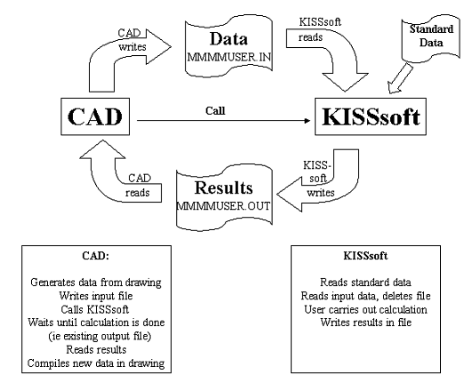

|
|
|


KISSsoft 中的开放接口概念
KISSsoft 的接口概念具有简单而又非常灵活的结构。
应当能够尽可能简单地将计算程序集成到各种 CAD 系统中，并在不同的环境（如 MS Windows 或 UNIX 等操作系统）中使用它们。
CAD 系统与 KISSsoft 之间的接口机制基于文本数据集（ASCII 文件），对于所有传递数据，ID 与数值一起传递（参见示例：过盈配合计算）。该数据集长度可变，但只会传递 CAD 系统中已知的值。这取决于 CAD 系统和当前激活的图纸。
KISSsoft 将测试第三方程序传输的数据集，以确保其完整性和一致性，如有必要，将提示您在 KISSsoft 输入系统中输入额外数据。KISSsoft 随后将运行计算，并将 CAD 系统所需的输出数据写入第二个文本数据集。然后，它将此数据集返回给 CAD 系统。通过使用报告生成器，可选择输出文件的任何格式，即 KISSsoft 会适应第三方程序。CAD 现在可以读取所需数据并选择性地处理。
这一概念带来简单的接口形式，使得即使非专业人士也能快速编写应用程序。

Open interfaces concept in KISSsoft
The KISSsoft interfaces concept has a simple, yet very flexible structure.
It should be possible to integrate calculation programs into all kinds of CAD systems as simply as possible, and use them in different environments (operating systems such as MS Windows or UNIX).
The interface mechanism between the CAD system and KISSsoft is based on a text dataset (ASCII file), and an ID is transferred together with the numerical value for all transfer data (see chapter Example: Interference fit calculation). This dataset can be of variable length, but only the values that are known in the CAD system will be transferred. This depends on the CAD system and the currently active drawing.
KISSsoft will test the dataset transferred by the third party program, to ensure it is complete and consistent, and, if necessary, you will be prompted to input additional data in the KISSsoft input system. KISSsoft will then run the calculation and write the output data that the CAD system requires to a second text dataset. It then returns this dataset to the CAD system. By using the report generator you can select any format for the output file, i.e. KISSsoft adapts itself to the third party program. The CAD can now read the data required by the situation and process it selectively.
This concept results in simple interface forms, which enables even non-specialists to write applications quickly.